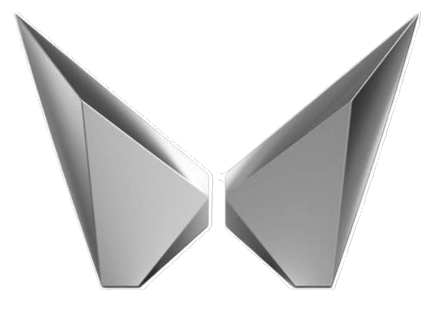

Maruti Suzuki

Mahindra
Discover the best car brands, models, and the legacy of Indian car manufacturing.
Indian car brands have a rich legacy of innovation, resilience, and growth, shaping the country’s automotive landscape. Maruti Suzuki revolutionized car ownership by making cars affordable and reliable for
millions of middle-class Indians, while Tata Motors, a pioneer since 1945, introduced the first small car, the Tata Indica, and has become a global player with its acquisition of Jaguar Land Rover.
Mahindra & Mahindra, known for its tough and durable SUVs like the Thar, has expanded into the electric vehicle market with models like the Nexon EV.
Force Motors, with its rugged utility vehicles, continues to serve both urban and rural India, while Hindustan Motors,
once synonymous with the iconic Ambassador, marked an era of India's early car culture.
Together, these brands embody India's growing automotive expertise,
blending global innovation with local needs.